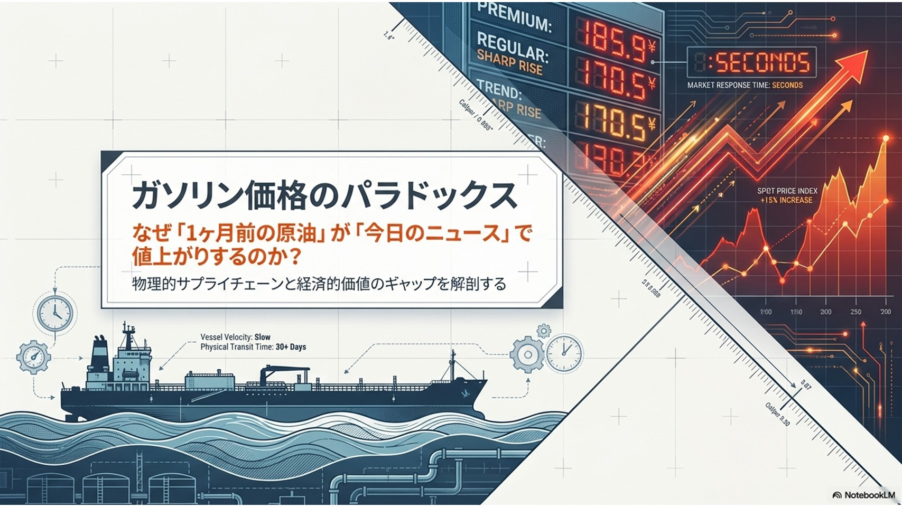
ガソリン価格のパラドックス 「1ヶ月前に安く輸入されたはずの原油」から作られたガソリンが、なぜ「今日のニュース（中東情勢の悪化など）」をきっかけに即座に値上がりするのかという、消費者の素朴な疑問を提示しています。物理的なモノの流れと、経済的な価値との間に存在するギャップを解き明かすという、本プレゼンテーションのテーマを宣言しています 。
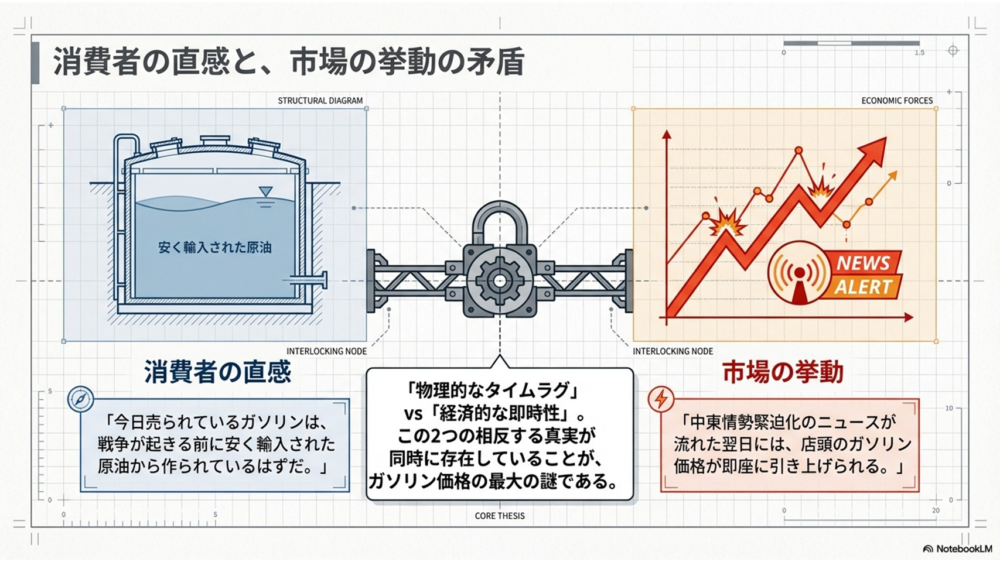
消費者の直感と、市場の挙動の矛盾 消費者が抱く「過去の安い原油で作られたから安いはずだ」という直感と、実際の「ニュースの翌日に即座に店頭価格が上がる」という市場の挙動の矛盾（パラドックス）を図解しています。「物理的なタイムラグ」と「経済的な即時性」という相反する2つの事実が同時に存在することが、価格メカニズムの最大の謎であると指摘しています 。
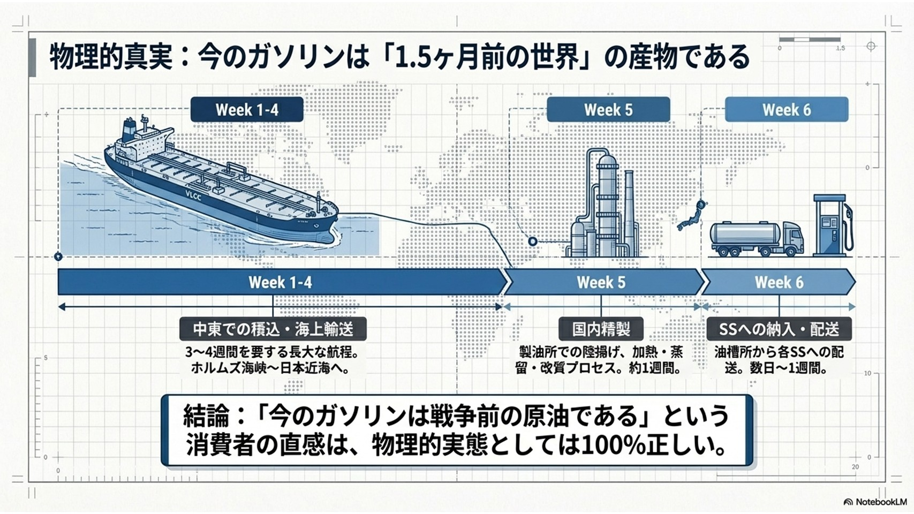
物理的真実：今のガソリンは「1.5ヶ月前の世界」の産物である 中東での原油の積み込みから、海上輸送、国内での精製、そしてガソリンスタンド（SS）に配送されるまでには、約1.5ヶ月もの物理的なタイムラグが存在することを示しています。つまり、「いま売られているガソリンは戦争が起きる前の原油から作られている」という消費者の直感は、物理的な事実としては100%正しいことを裏付けています 。
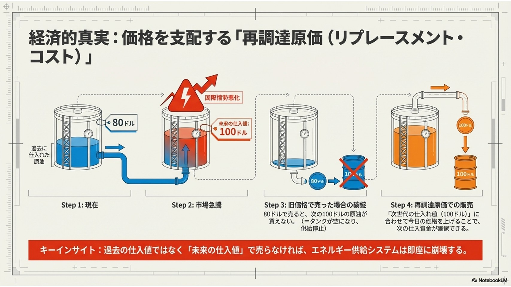
経済的真実：価格を支配する「再調達原価（リプレースメント・コスト）」 過去の安い仕入れ値でガソリンを売ってしまうと、高騰した「次回の原油」を買い直す資金が足らなくなり、供給システムが崩壊してしまうという経済的なカラクリを解説しています。これを防ぐために、ガソリンは過去の仕入れ値ではなく「次に買い直すための未来の価格（再調達原価）」で販売されなければならないという核心を突いています 。
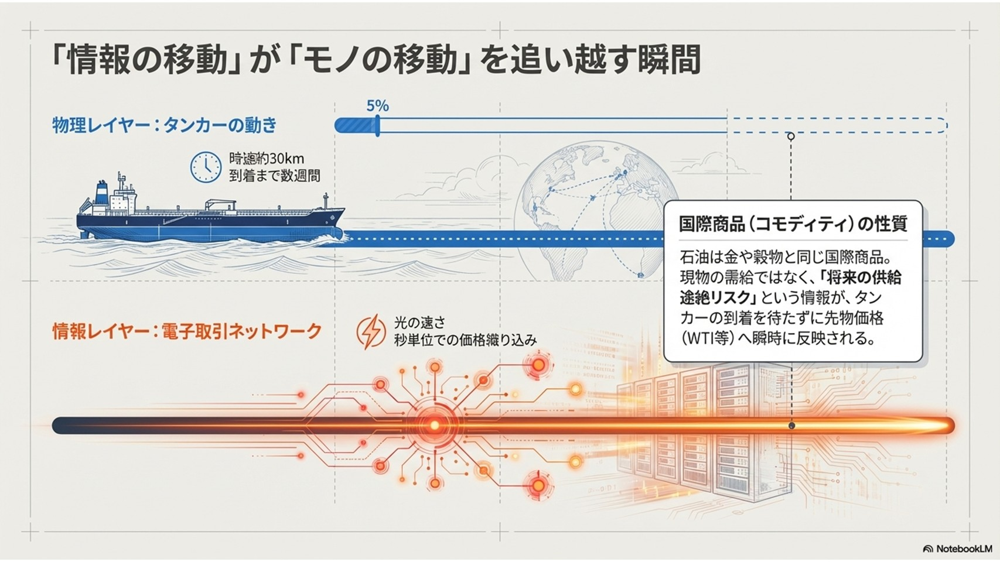
「情報の移動」が「モノの移動」を追い越す瞬間 原油を運ぶタンカー（物理レイヤー）は時速約30kmで数週間かけて移動しますが、原油価格を決める電子取引（情報レイヤー）は光の速さで「将来の供給リスク」を先物価格に織り込みます。原油が金融商品（コモディティ）であるため、モノの到着を待たずに情報が先行して価格に反映されるメカニズムを説明しています 。
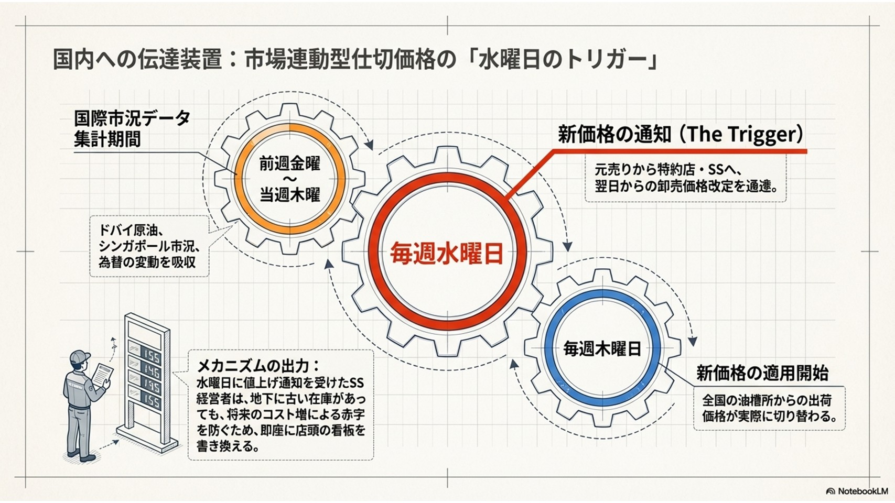
国内への伝達装置：市場連動型仕切価格の「水曜日のトリガー」 国際的な価格変動が、日本のガソリンスタンドの店頭価格に反映される具体的な仕組みを解説しています。石油元売り会社から毎週水曜日に「新しい卸売価格」が通知される仕組みになっており、これを受けたSS経営者は将来の赤字を防ぐために、即座に店頭の看板（販売価格）を書き換えるという実態を示しています 。
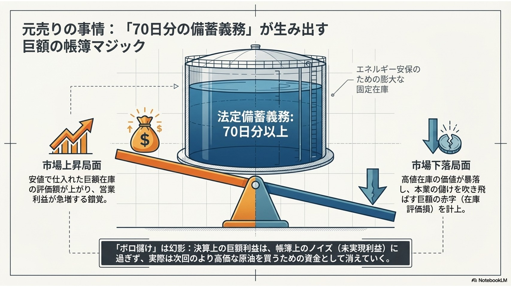
元売りの事情：「70日分の備蓄義務」が生み出す巨額の帳簿マジック 石油元売り会社には法律で70日分以上の備蓄義務があるため、原油価格が上昇すると手元にある大量の在庫の価値が上がり、決算上は巨額の利益（ボロ儲け）が出ているように見えます。しかし、それは帳簿上の錯覚（ノイズ）に過ぎず、実際には次の高価な原油を買うための資金として消えていくため、実態の伴う利益ではないことを説明しています 。
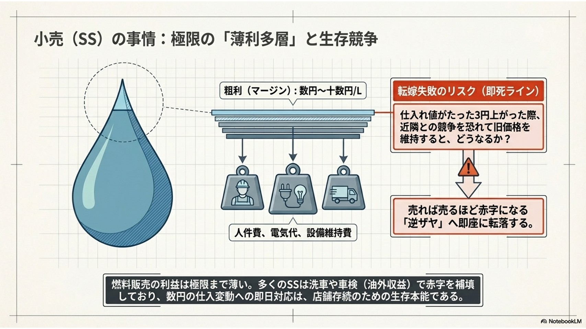
小売（SS）の事情：極限の「薄利多層」と生存競争 ガソリンスタンド（小売）のガソリン販売による利益（マージン）は極めて薄いことを示しています。仕入れ値が数円上がっただけでも、それを販売価格に転嫁しなければ即座に「売れば売るほど赤字（逆ザヤ）」に転落してしまいます。店頭価格の即日値上げは、店舗が生き残るための「生存本能」であると解説しています 。
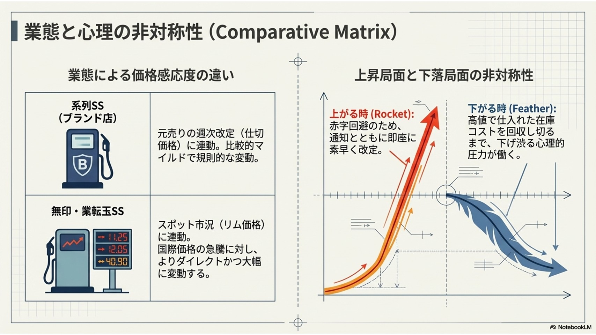
業態と心理の非対称性（Comparative Matrix） SSの業態による価格変動の違いに加えて、価格が「上がる時は早く（ロケット）」、「下がる時は遅い（羽毛）」という非対称性（ロケット・アンド・フェザー現象）について解説しています。価格下落時には、高値で仕入れた在庫のコストを回収し切るまで値段を下げ渋るという、販売側の心理的な圧力が働くことを示しています 。
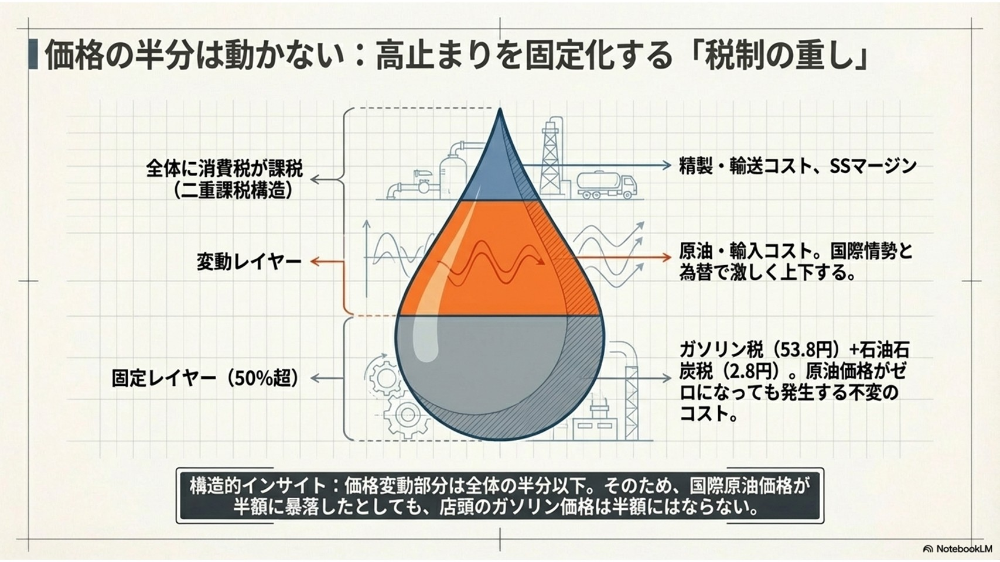
価格の半分は動かない：高止まりを固定化する「税制の重し」 ガソリン価格の構造を分解すると、半分以上が「ガソリン税」などの固定された税金で占められていることを図解しています。価格の変動部分は半分以下しかないため、仮に国際原油価格が半額に大暴落したとしても、店頭のガソリン価格は半額にはならないという構造的な限界を指摘しています 。
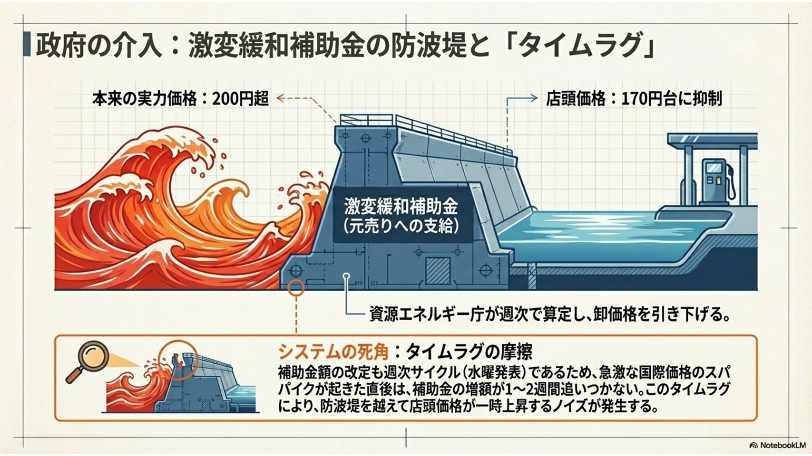
政府の介入：激変緩和補助金の防波堤と「タイムラグ」 価格高騰時に政府から支給される「激変緩和補助金」が、本来なら200円を超える価格を170円台に抑える防波堤として機能していることを示しています。しかし、補助金額の見直しも「週次サイクル」で行われるため、急激な価格高騰が起きた直後は補助金の増額が間に合わず、一時的に店頭価格が上がってしまうというシステムの死角（タイムラグ）を説明しています 。
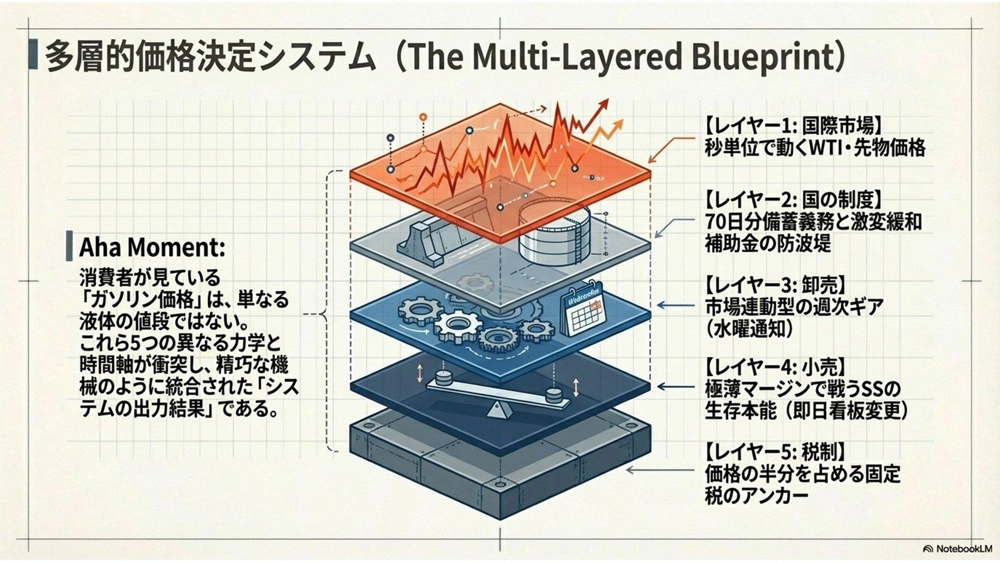
多層的価格決定システム（The Multi-Layered Blueprint） これまでのスライドのまとめとして、消費者が目にする「ガソリン価格」は単なる液体の値段ではないと結論付けています。「国際市場の動き」「国の制度」「卸売の仕組み」「小売の経営事情」「税制」という5つの異なる力学や時間軸が複雑に絡み合った、精巧なシステムの出力結果であるという全体像を図解しています 。
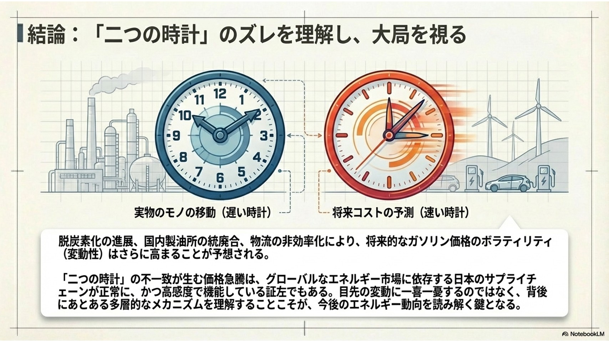
「二つの時計」のズレを理解し、大局を視る 物理的なモノの移動という「遅い時計」と、将来コストの予測という「速い時計」の不一致が価格急騰のパラドックスを生んでいると総括しています。この即座の価格変動は、日本のサプライチェーンが正常かつ高感度に機能している証拠でもあり、目先の価格の上下に一喜一憂するのではなく、その背後にある多層的なメカニズムを理解することの重要性を説いています 。